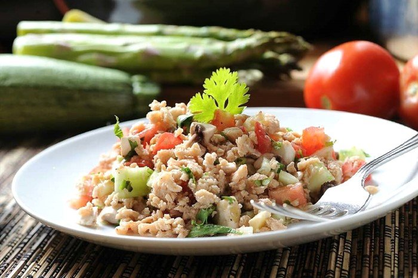

Ceviche de Soya

Description
This soy ceviche tostadas recipe comes straight from Mexico. Textured soy and vegetables are cured in a lime marinade and make a great vegan topping for tostadas. [Recipe originally submitted to Allrecipes.com.mx]
Ingredients
- 8 ounces soy protein
- 5 limes, juiced
- 1 pound plum tomatoes, seeded and chopped
- 2 small cucumbers - peeled, seeded and cubed
- 1/2 white onion, diced
- 10 sprigs cilantro leaves, finely chopped
- 1 jalapeño pepped seeded, deveined and minced
- 1 teaspoon dried oregano
- salt to taste
- 16 crisp-fried tostadas
- 2 avocados - peeled, pitted, and cubed
Steps
- Place soy protein in a pot and cover with water. Bring to a boil for 3 minutes.
Drain and rinse very well with clean water. Allow to cool completely, about 30 minutes.
- Place hydrated soy in a glass bowl and pour lime juice over it. Let stand for 30 minutes.
- Drain lime juice. Mix in tomatoes, cucumbers, onion, cilantro and jalapeño.
Season with oregano and salt. Serve tostadas and garnish with avocado.